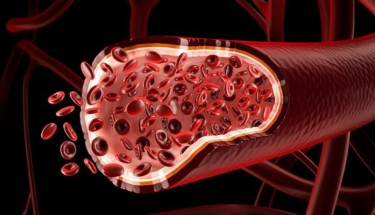
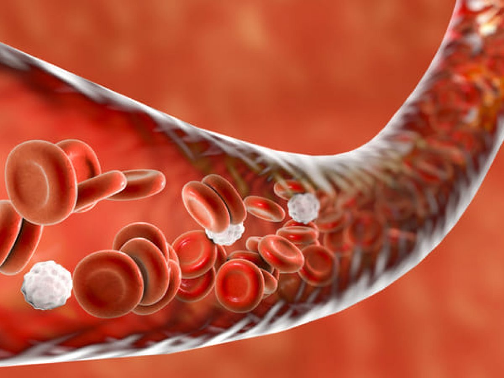
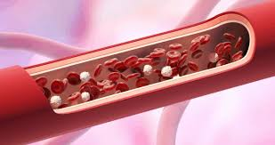

Trasplante de vasos sanguíneos |
| Durante un seminario de la Asociación Estadounidense del Corazón, un equipo de científicos, entre los que hay un argentino, anunció que por primera vez lograron implantar con éxito en pacientes vasos sanguíneos de laboratorio, creados a partir de células de piel. La noticia podría tener gran trascendencia para las personas que, por estar sometidas regularmente a diálisis, sufren daños en su aparato circulatorio. |  |
|  | La otra gran ventaja señalada por los investigadores para este nuevo método es que como el tejido a implantar puede generarse a partir de células del propio paciente, no produciría rechazos del sistema inmunológico. Pero la mayor ventaja que los científicos destacan de su logro es que los tejidos de laboratorio podrán permanecer refrigerados hasta que se los necesite. |
| La otra gran ventaja señalada por los investigadores para este nuevo método es que como el tejido a implantar puede generarse a partir de células del propio paciente, no produciría rechazos del sistema inmunológico. Pero la mayor ventaja que los científicos destacan de su logro es que los tejidos de laboratorio podrán permanecer refrigerados hasta que se los necesite. |  |